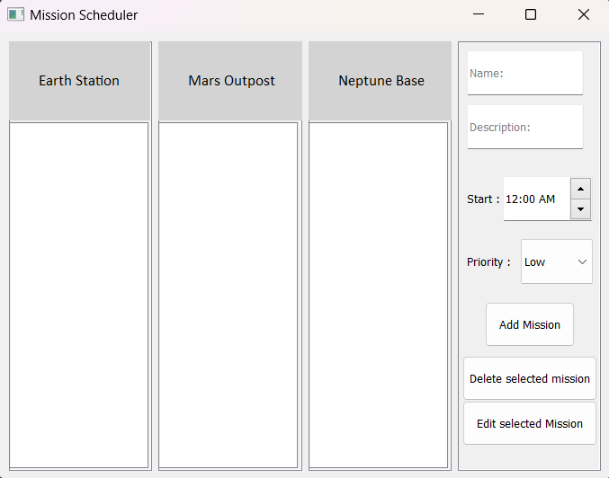

- Three Planetary Station Windows (Time Slots):
- Earth Station (8 AM - 12 PM): Handles tasks scheduled in Earth’s morning hours.
- Mars Outpost (12 PM - 6 PM): Oversees Mars-based operations scheduled for the afternoon.
- Neptune Base (6 PM - 10 PM): Manages Neptune-based missions and evening tasks.
- Mission Input Form
- Details: Allow users to add a mission name, short description, start time, and priority level (Low, Medium, High).
- Allot each mission to the appropriate planetary station window based on the start time entered:
- Earth Station for times ranging from 8 AM - 12 PM
- Mars Outpost for times ranging from 12 PM - 6 PM
- Neptune Base for times ranging from 6 PM - 10 PM
- Priority level and color coding
- Each mission should be color coded based off of its priority level
- Red for High-priority (Critical Missions)
- Yellow for Medium-priority (Standard Operations)
- Green for Low-priority (Routine Tasks)
- Each mission should be color coded based off of its priority level
- Edit and delete options
- Each mission entry should have buttons for editing or deleting the mission. Updates should reflect immediately.
BONUS 1: Sort missions within each window so that high-priority missions appear at the top, followed by medium, then low-priority.
BONUS 2: Show the total number of missions in each planetary station window to monitor station workload.
Completion of bonus features will get you extra marks, but there is no penalty for not doing them.
